Two Degree-of-Freedom PID Control for Setpoint Tracking
Contents
Model Description
This demo shows two degree-of-freedom PID control using the PID Controller (2DOF) block in Simulink®. The PID controller is used to regulate the speed of an electric motor as shown below.
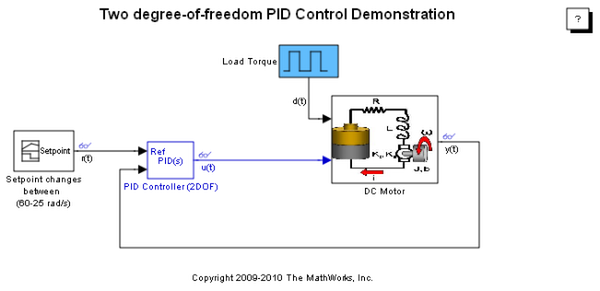Figure 1: Simulink model with two degree-of-freedom PID control of a DC motor.
To open this model, type sldemo_pid2dof in a MATLAB® terminal.
The electric motor is an armature-controlled DC motor. Voltage input controls the shaft speed of the motor. The block diagram of the motor is shown in Figure 2. The motor experiences a load torque 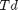 (0-5 Nm).
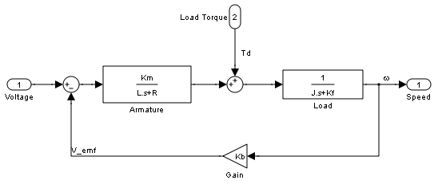Figure 2: Block diagram of the motor.
Two Degree-of-Freedom PID Control
In contrast to the PID Controller block, the PID Controller (2DOF) block provides an extra degree of freedom to allow users to weight the setpoint as it passes through the proportional action channel and the derivative action channel. See the PID Controller (2DOF) help page or type doc('PID Controller 2DOF') in a MATLAB terminal for more details. The schematic of the PID Controller (2DOF) appearing in the model is shown below.
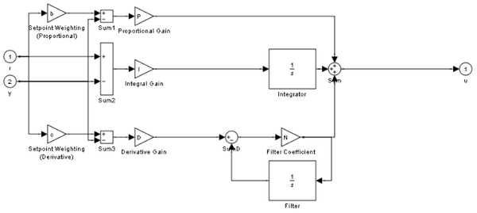Figure 3: Under-mask view of the PID Controller (2DOF).
As shown in Figure 3, the error signal seen by the proportional action is given by
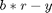
The signal seen by the derivative action is
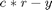
and the signal seen by the integral action is
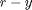
In general, the setpoint weight c is chosen to be 0 to prevent undesirable transients upon a change in the setpoint, which is an effect known as derivative kick. The setpoint b affects the overshoot performance of the controller. Generally, a small b value reduces overshoot. However, smaller b values can also result in slower response to setpoint changes. For more details on picking the right setpoint values, see Reference [1].
When 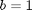 and 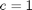, the behavior of the two degree-of-freedom PID controller is identical to a classical PID controller.
Simulating with b = 1 and c = 1
When and , the behavior of the two degree-of-freedom PID controller is identical to a classical PID controller. The setpoint signal, control signal, and closed-loop response of the model are shown in Figure 4.
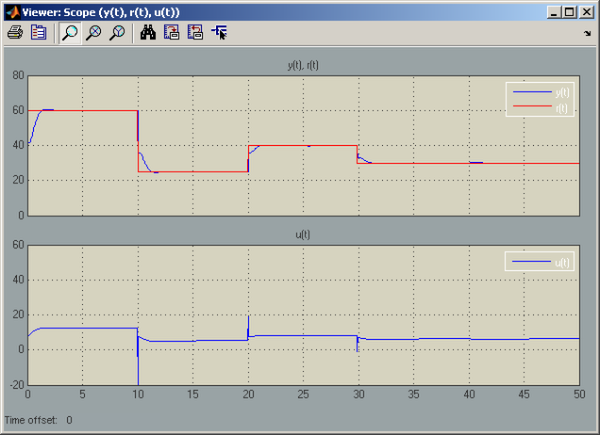Figure 4: Setpoint vs. measured output, control signal.
Figure 4 clearly shows the spikes in the control signal, which are caused by aggressive proportional and derivative response to the setpoint change. Modifying the b and c weights can make this response less aggressive, as shown next.
Simulating with the b = 0 and c = 0
In this case, the two degree-of-freedom PID controller is known as I-PD where only the I action acts on the classical error signal, and the PD action acts only on the measured output.
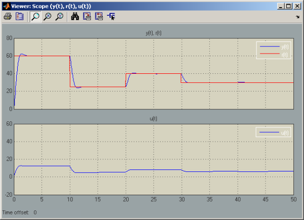Figure 5: Setpoint vs. measured output, control signal.
The simulation results clearly show the absence of large transients in the control signal due to the sudden changes in the setpoint.
See Reference [1] for more information on how b and c are chosen.
Summary
The PID Controller (2DOF) block in Simulink supports two degree-of-freedom PID control. This block can be used for tracking complex setpoint profiles and moderating the impact of sudden setpoint changes on control signal transients. The PID tuner of Simulink(R)Control Design™ can be used to automatically tune the P, I, and D gains of the PID Controller (2DOF) block.
References
[1] K. Åström, T. Hägglund, Advanced PID Control, ISA, Research Triangle Park, NC, August 2005.